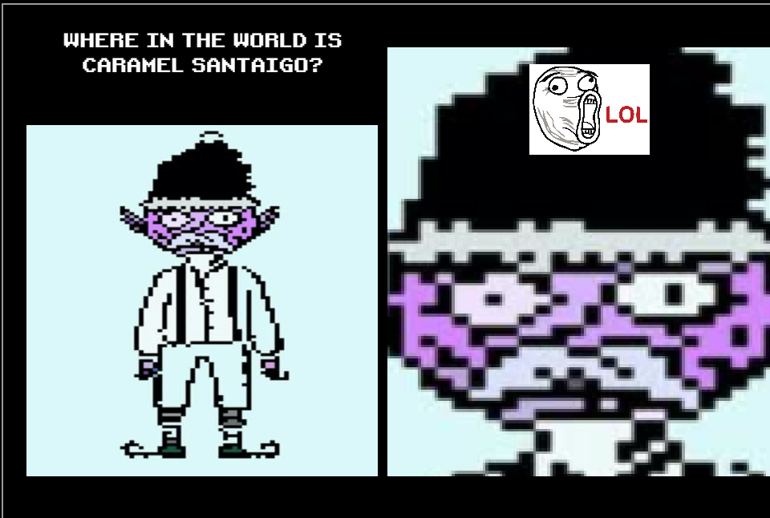
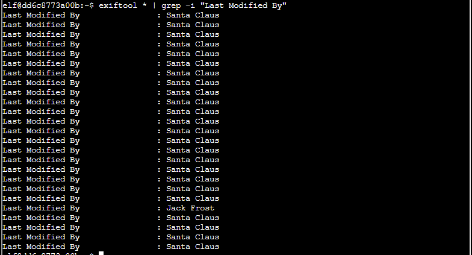
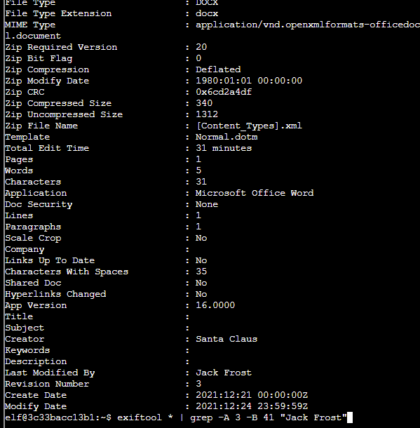
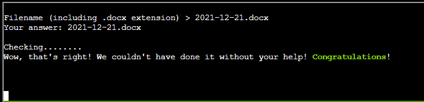

What a face!! Hahahaha! Anyway, this challenge is pretty easy. Just play the game. Guess the elf based on clues.
This challenge is all about exiftool. I usually think of this tool when analyzing metadata for photos, but it has a wide array of applications in the forensic industry encompassing much more than just mere photos. Check out what the tool outputs by default. Then once familiar, run it on all the things! Use grep to filter and some obvious differences show themselves.

Check out the suspected file to get the name.
Enter the file name into the dealy-yo to win some hints! Be sure to talk to Piney Sappington to actually receive them after completing the challenge.
